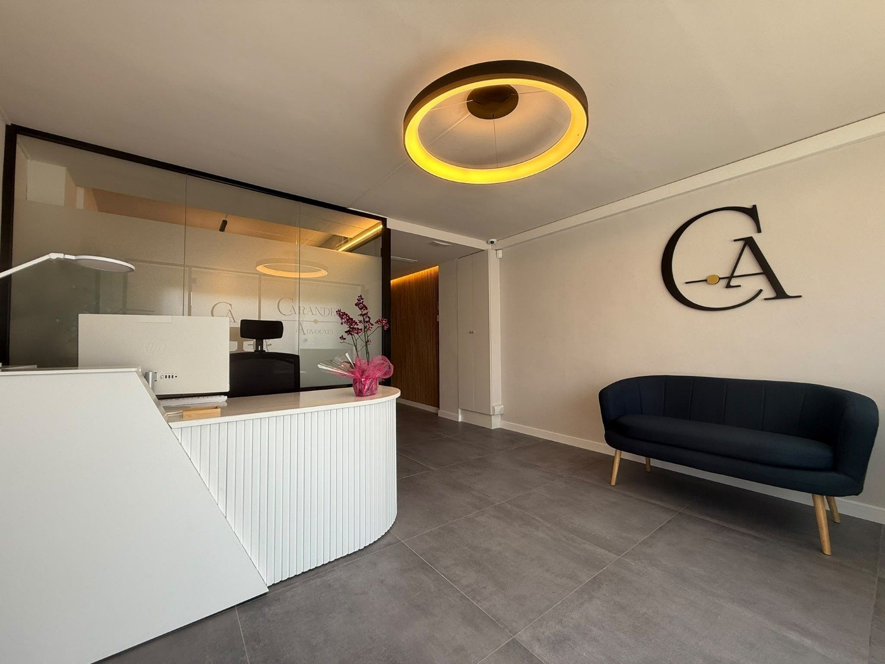
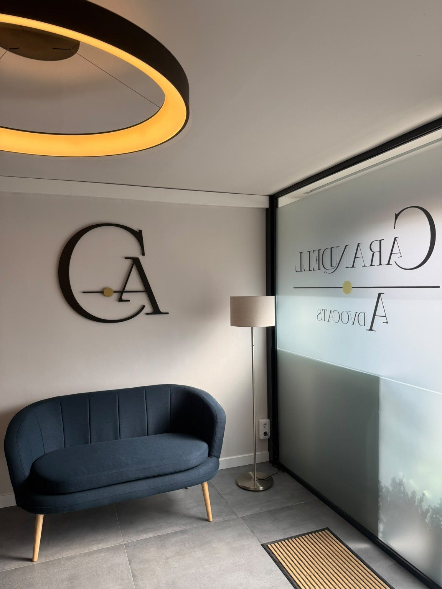
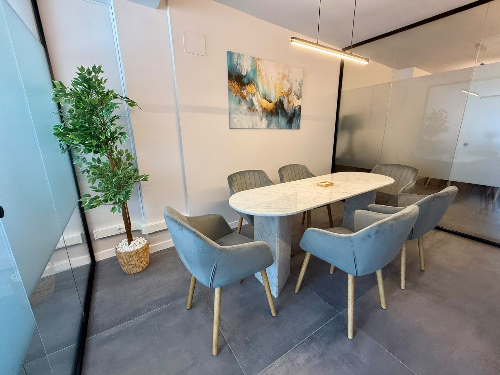

Dret civil
Reclamacions, contractes, conflictes entre particulars i altres assumptes de naturalesa civil.
Carandell Advocats
Carandell Advocats és un despatx d’advocats que ofereix serveis d’assessorament legal amb un enfocament proper, professional i compromès. Ens distingim per oferir solucions jurídiques personalitzades, adaptades a les necessitats específiques de cada client, amb la màxima dedicació i rigor.

Àrees d’actuació
Carandell Advocats assessora i defensa particulars, professionals i empreses en diferents àmbits del Dret, oferint un tracte proper, directe i personalitzat.
Reclamacions, contractes, conflictes entre particulars i altres assumptes de naturalesa civil.
Assessorament i defensa en assumptes de dret de família i matrimonial.
Herències i successions, acceptació i repartiment de béns i redacció de testaments.
Assessorament i defensa en reclamacions i litigis derivats de les relacions laborals.
Assessorament i defensa jurídica en procediments de naturalesa penal.
Assessorament jurídic a professionals i empreses en qüestions mercantils i societàries.
Arrendaments, conflictes entre propietaris i llogaters, desnonaments i altres qüestions immobiliàries.
Assessorament jurídic en multes de trànsit i altres procediments que requereixin assistència legal.
Advocada i fundadora de Carandell Advocats
Graduada en Dret per ESADE, va completar la seva formació a la mateixa institució amb el Màster Universitari en Advocacia i el Màster en Dret Penal Econòmic i Corporate Compliance.
Té formació i experiència en Dret Immobiliari, així com una sòlida trajectòria com a advocada d’empresa en assumptes civils, mercantils i laborals. Aquesta visió multidisciplinària li permet oferir un assessorament jurídic proper, rigorós i estratègic, adaptat a les necessitats de cada client.


Advocada i fundadora de Carandell Advocats
Graduada en Dret per ESADE, va completar la seva formació a la mateixa institució amb el Màster Universitari en Advocacia i el Màster en Dret Penal Econòmic i Corporate Compliance.
Té formació i experiència en Dret Immobiliari, així com una sòlida trajectòria com a advocada d’empresa en assumptes civils, mercantils i laborals. Aquesta visió multidisciplinària li permet oferir un assessorament jurídic proper, rigorós i estratègic, adaptat a les necessitats de cada client.
Un despatx d’advocats modern, sincer i molt professional. No hi ha paraules per expressar el meu més profund i sincer agraïment per l’excel·lent representació legal i el tracte rebut.
Tracte i professionalitat excel·lents. Gràcies!
Un servei seriós, educat, fiable i constant en la seva feina. Empatia total i seguretat aportada. No ho dubteu: si necessiteu un bon servei jurídic, aquí el teniu.
La Maria és molt competent, propera i professional. Molt contents d’haver contractat els teus serveis, tot un encert!
Molt professionals, àgils i respectuosos per resoldre qualsevol problema legal.
Molt satisfet amb el despatx de Maria. Destaquen per la seva professionalitat, empatia i tracte personal. Totalment recomanable.
Atenció propera
Com arribar
Carrer Fontanills, 41, Local 1
08320 El Masnou, Barcelona